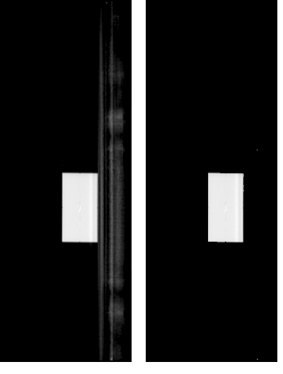
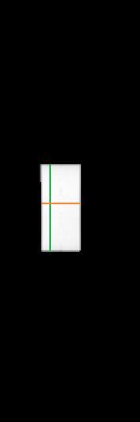
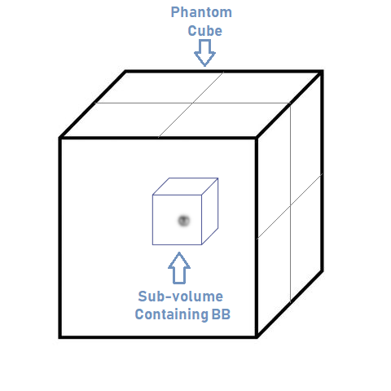
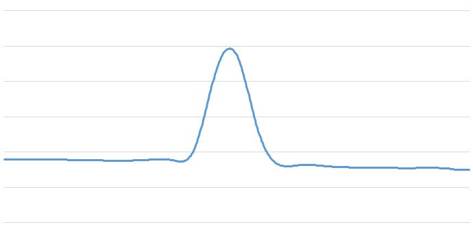

This describes the BB finding algorithm and precise measurement of the BB's location.
The first step is to determine the BB's approximate location within the CBCT volume. The method needs to be immune to image artifacts and to avoid voxels occupied by the couch. To do this, the algorithm first locates the phantom cube and then the BB within the cube.
A 3D volume is constructed using the CBCT slices. Next, the volume is divided into horizontal slices parallel to the table and perpendicular to the Y-axis. Starting at the top, slices are examined in descending order to determine if they contain the cube.
The examination of a single slice involves the following steps:Images that are mostly 'black' will be made completely black. Images that contain the cube or the table will have the dark parts of the images made completely black.
Note that using transitions is necessary because the profile of the cube is occasionally not symmetrical. This asymmetry thwarts approaches such as center of mass and edge finding using the severity of slope.
The image below shows a horizontal slice containing the cube before and after noise reduction. Note that the aspect ratio has not been corrected.

Typical horizontal slice containing the cube, with edge pairs from single voxel rows and columns in theZ axis (orange) and X
axis (green) highlighted. Many of each are acquired, and if the proper number are accumulated it indicates that the
slice contains the cube.

When two adjacent slices are found where the higher one does not contain the cube and the lower one does, then the top of the cube has been established. The vertical center of the cube is determined by descending a further 1/2 the cube's height. Several slices are checked at the vertical midpoint to increase confidence that the cube has been found.
The horizontal center of the cube is found using the midpoint between edges found in the Z and X directions. At this point the coarse (approximate) position of the cube has been found, which is accurate to within 2 voxels.
The following steps are taken to determine the precise location of the BB.
Virtual sub-volume within the cube surrounding the BB.

Profile of one of the cubic splines. The maximum point corresponds to the center of the BB.
